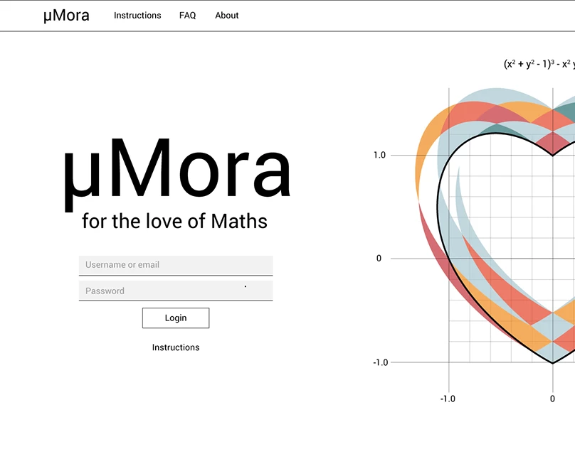

1 · Front page (full version: dir-1)
Real reference: IEEE Spectrum's site. Lead feature with rail, headline running into a grey deck, boxed section tags.
Each cell is the first screen of one direction, with the real name, real article titles and real artwork. Candidates 1–3 are built out as full pages (dir-1, dir-2, dir-3). Candidates 4–6 are alternates: say the word and one becomes a full page.
Real reference: IEEE Spectrum's site. Lead feature with rail, headline running into a grey deck, boxed section tags.
Real reference: the IEEE journal article page. Two columns, Abstract and Index Terms, Fig. and Table captions, author biography.
Roulette, web #8 (cinematic sound-viz dark). A print cover made of a live signal recording, then a contents page.



Best designer, bold: Mark Porter's newspaper systems. Each department owns a colour and a heavy top rule.
I am a biomedical engineer and a PhD candidate at the University of Melbourne. My undergraduate thesis built a device that records blood pressure, temperature, bioimpedance and PPG from a patient's arm, validated in a clinical study. That work became Endo-MASS.
Recent articles: ML Notation Atlas · Estimating Osteoarthritis Progression · Novel Computational Models for Semantic Decoding.
Best designer, quiet: Edward Tufte's handouts. One reading column, with small figures and notes in the margin.
Roulette, East Asia #12 (dense Japanese magazine). A diagram with numbered callouts and handwritten notes beside a data grid.